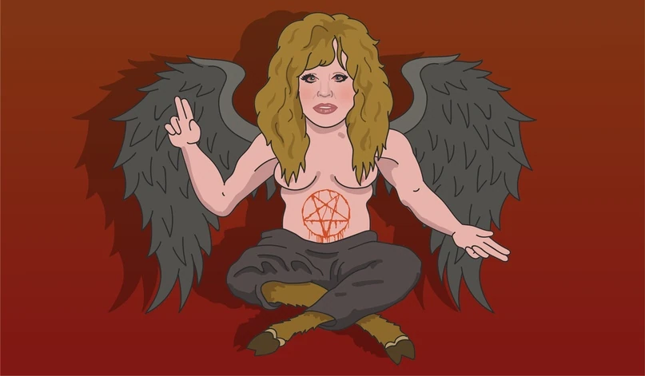

Руководствуясь недавно опубликованным на сайте Роскомнадзора отчетом по Егору Криду, Данила Блюз решил проанализировать других отечественных исполнителей. Не исключено, что среди мэтров эстрады затаились враги России, разрушающие наши традиционные ценности

На днях Национальный совет социальной информации опубликовал подробный разбор творчества и сценического образа Егора Крида. В докладе Егора называют исполнителем, несущим антироссийские ценности. Такой вывод подкрепляется, например, не только анализом текстов песен, но и просто принадлежностью Крида к рэпу. Видите ли, в книге некоей Четвериковой О.Н. «Цифровой тоталитаризм. Как это делается в России» утверждается, что рэп — «идеологическое оружие сатанизма».
Также само имя Егор Крид ассоциируется с древнерусским словом «кривда« (ложь), а также с игрой Assassins creed (Кредо убийцы), что, как вы понимаете, очень и очень плохо. В целом творчество Крида признано отупляющим, способствующим разрушению государственных устоев, традиционных ценностей, и должно маркироваться клеймом +18. Хотя лучше его, конечно, вообще запретить и сжечь, а прах развеять по ветру.
Я читал этот доклад и просто глазам своим поверить не мог! Я-то думал, что я — главный бредогенератор в этой стране. Я всегда считал своим коньком притягивание фактов за уши, домыслы, ссылки на сомнительные источники, а тут люди на государственном уровне (доклад был опубликован на сайте Роскомнадзора) гонят ересь такого первоклассного пошиба, что меня аж завидки берут! Черт побери, я тоже хочу объедаться наркотиками, писать трехэтажную ахинею, да еще и казенные деньги за это получать.
Расценивайте этот текст как мое портфолио в Роскомнадзор, а меня — как эксперта по культурологическому кляузничеству. Клянусь богом, я любого выведу на чистую воду!
Ни один музыкант не уцелеет, каждый окажется разрушителем семейных ценностей и идеологическим врагом государства.
Надежда Бабкина
Начнем с имени. Имя исполнительницы подсознательно воспитывает в подрастающем поколении корыстолюбие, алчность, стяжательство. Что суть есть Надежда Бабкина? Когда мы слышим это имя, первая ассоциация — надежда на бабки! То есть деньги решают все, как бы намекает нам певица. Погоня за богатством — один из самых страшных грехов, это суть есть отречение от Господа нашего и служение Мамоне. А Иисус завещал, что нельзя служить двум хозяевам одинаково и всякий, кто гонится за деньгами, — забывает о Боге.
Также фамилия Бабкина ассоциируется со словом «бабка», которое означает пожилую женщину, только в негативной коннотации. А это воспитывает в подростках неуважение к старшим. Сперва в обиходе молодых будет считаться нормальным уничижительное «бабка», потом они перестанут уступать пенсионерам место в общественном транспорте, затем начнут грабить ветеранов, караулить их в подъезде и срывать с них медали, примутся выменивать награбленное на блошином рынке на водку, а после — забудут о победе Советского Союза во Второй мировой войне. А там и до продажи Родины недалеко.
Бабкина специализируется на исполнении так называемых народных песен. Но, разумеется, никакой народ их сейчас не поет, их поют в основном алкоголики после распития очередной бутылки. «Черный ворон», «Ой, мороз, мороз», «Виновата ли я» — спутники каждой российской пьянки или, как любят говорить в этой среде, «застолья». Само собой, у слушателя в итоге развивается рефлекс: когда он слышит песни Надежды Бабкиной — ему сразу же хочется выпить.
Итог нашего краткого анализа неутешителен. Бабкина способствует растлению народа, искусно маскируясь под хранительницу традиций. На деле ее творчество оказывается просто набором песен сомнительной художественной ценности и пропагандой ношения псевдорусских костюмов.
Алла Пугачева
Тут у нас сразу же неблагонадежная фамилия — Пугачева! Сразу же на ум приходит Емельян Пугачев, бунты, повешенные русские офицеры, погромы и резня. То, что Пугачева заняла такое значительное место на отечественной эстраде, можно объяснить только недальновидностью советской номенклатуры. Человека с такой сомнительной фамилией на пушечный выстрел нельзя подпускать к микрофону.

Одновременно с бунтарской фамилией не сочетается роскошная жизнь певицы в замке с прислугой. Это вызывает диссонанс, обращает внимание на социальное неравенство в стране.
Неофициальный самопровозглашенный статус Примадонны отсылает нас не только к первой исполнительнице в опере, но и к Мадонне, то есть Богоматери, что суть есть уже богохульство.
А чего стоят постоянные уходы певицы со сцены? Каждые пять лет Пугачева дает свой «последний» концерт и все никак не уйдет! Может ли такое поведение служить примером подрастающему поколению? Это воспитывает в молодежи необязательность исполнения обещаний, склонность нарушать свое слово, а далее — к нарушению договоренностей в принципе. Юный член общества смотрит на Пугачеву и думает: «А не взять ли мне в будущем кредит, а потом не отдать? А не облапошить ли мне также ближнего своего? А не нарушить ли присягу? А не продать ли военные секреты Родины? Раз Пугачева нарушает свое слово, то чем я хуже?»
В итоге Пугачева своим образом жизни и фамилией подталкивает молодежь к революции, клятвопреступничеству, а также может — при особом желании, конечно, — задеть чувства верующих.
Филипп Киркоров
О чем говорит нам фамилия певца Киркорова? Пользуясь методой покойного знатока русско-английской лингвистики Михаила Задорнова, разберем фамилию на составные. Первая часть — это слово «кир» — жаргонное обозначение пьянства или выпивки в целом. Слово «кор», видимо, имеет английское происхождение — core, что означает суть, ядро чего-либо. Также core ассоциируется с термином hardcore, что примерно переводится как «жесткий«. В результате получается «ядро пьянства», или «ядерное пьянство», «жесткое пьянство», хардкорный кир, выражаясь молодежным сленгом. Опять мы имеем перед собой скрытую пропаганду алкоголизма.
Сценический образ певца, в свою очередь, в открытую пропагандирует гомосексуализм. Возьмите любой парадный костюм Киркорова, и вы обнаружите, что наполовину он состоит из огромных перьев. Не секрет, что наша культура сильно криминализирована, вся страна прекрасно знает блатной жаргон и разбирается в так называемых понятиях. Так что же думает русский человек, видя мужчину в перьях? Первая ассоциация — это «петух», то есть «гомосексуалист» на тюремном жаргоне. Известно, что «петухи» в российской тюремной иерархии — самая низшая каста, они бесправны и не могут ни с кем контактировать, помимо собственно полового акта. Так вот, когда русский человек видит, как «петух» выходит на сцену и начинает петь, возникает диссонанс, в голове пошатываются вековые устои. Ведь «петух» должен сидеть у параши и молчать, а тут он красуется в лучах софитов, ему рукоплещет зал, в него швыряют цветы! Привычный порядок вещей нарушен, а для русского человека ��ет ничего святее привычности.

Дима Билан
Услышав впервые фамилию Билан, мы тут же представляем себе биплан — популярный на заре авиации вид самолетов с двумя несущими поверхностями. Самый известный в России биплан — Ан-2, в народе — кукурузник. А кто у нас самый главный в истории кукурузник? Это Никита Хрущев, насаждавший некогда в России кукурузу и, что самое главное, отдавший в 1954 году Крым Украине! Тут уже дело попахивает не банальной педерастией, а настоящей государственной изменой, покушением на суверенные границы нашей страны! Надеюсь, соответствующие органы займутся этим вопросом и объяснят Билану, что он пропагандирует своей сомнительной фамилией.
«Руки Вверх»
Тут прослеживаются явные пораженческие настроения, пропаганда коллаборационизма. Что значит «руки вверх»? Нам с вами как бы говорят: когда на Родину придут враги, нужно не бросаться на амбразуру или под танк, как делали наши деды, а смиренно идти сдаваться в плен!